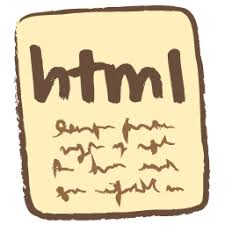

HyperText Markup Language(HTML)

HyperText Markup Language(HTML) merupakan sebuah bahasa markup, bukan bahasa pemrograman.
Pada awal tahun 2000, konsorsium W3C (World Wide Web Consortium) membuat perubahan besar melalui
XHTML (eXtensible Hypertext Markup Language). Ide dasarnya, dalam upaya meningkatkan kompatibilitas
dokumen HTML, W3C menambahkan struktur dan ekstensibilitas XML (eXtensible Markup Language) ke HTML.
Perkembangan HTML semakin pesat seiring diperkenalkannya HTML5 pada tahun 2009.HTML5 dibangun oleh
konsorsium W3C untuk dimasukkan sebagai perubahan besar berikutnya pada standar HTML. Atas dasar ini,
maka penting sekali untuk mengenal dan memahami HTML5 dengan baik.